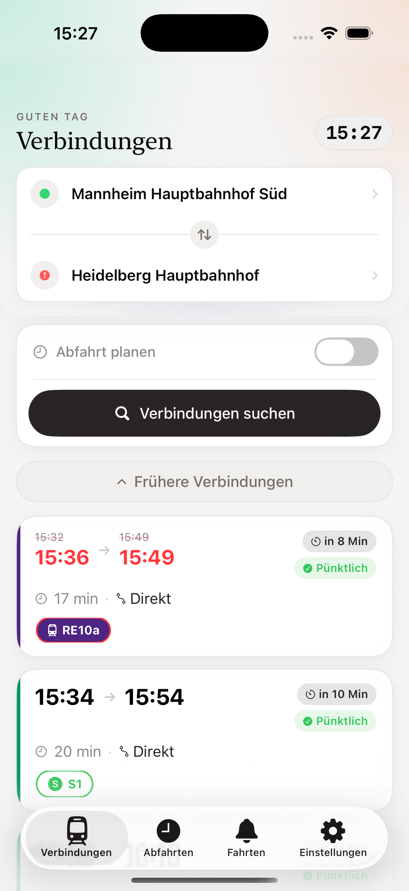
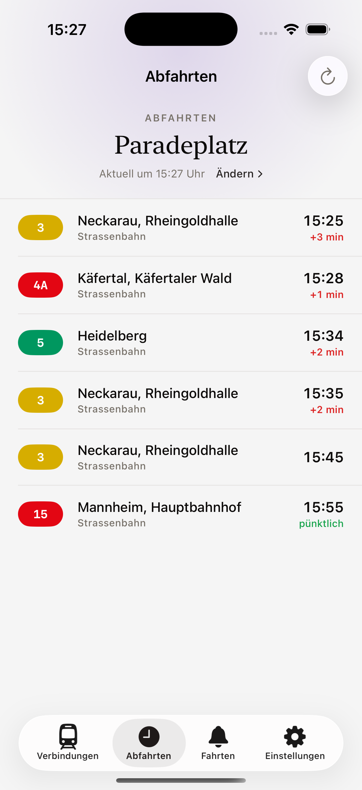
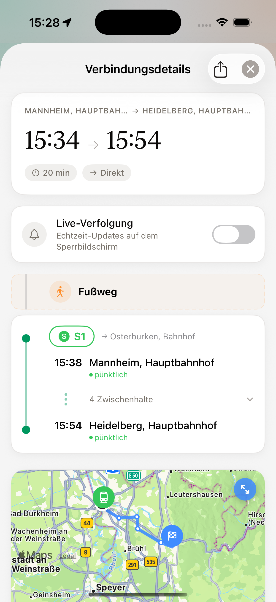

🚌 Kostenlos im App Store

Dein Begleiter für den Nahverkehr in Mannheim.
ÖPNV Mannheim bringt Echtzeitdaten des RNV direkt auf dein iPhone – ohne Account, ohne Werbung, ohne Ablenkung. Bus, Tram und S-Bahn im Großraum Mannheim, Heidelberg und Ludwigshafen, immer auf dem aktuellen Stand.


